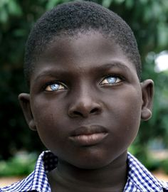
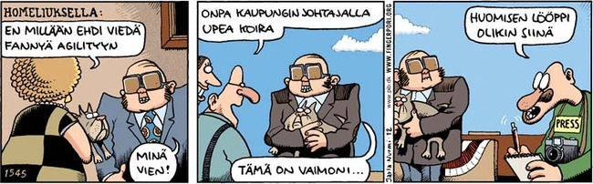
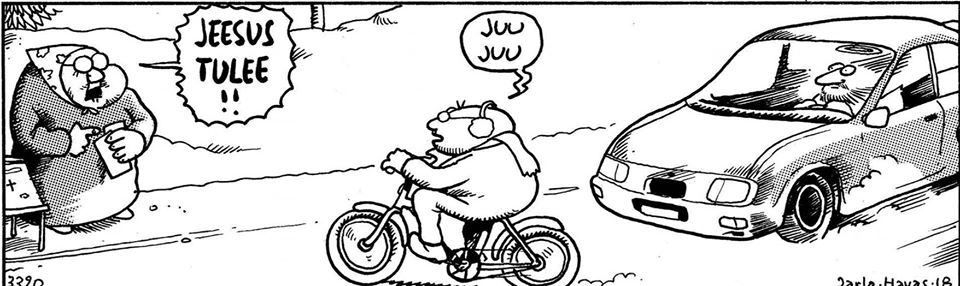

Kuten Seppo Lehto sanoi, suursuomalaiset ovat parempia kuin perussuomalaiset. Suosittelen äänestämään SDP:tä, Vassareita ja Vihreitä - ei oikeistopuolueita - oikeistopuolueet ovat myrkkyä.

Link: YouTube - Ren and Stimpy - Don't Whiz on the Electric Fence
YouTube (JewTube) - Coolio - Gangsta's Paradise
Mää oon nörtti senki piarunaamat. UUAA! UUAA! UUAA! WIUWIUWIUWIU! Linkki: Wikipedia - ETA (järjestö)
Mää ole erelle nörd. Täs o musiikkivireo: Link: YouTube - Eurythmics - Sweet Dreams are Made of This
Muistaka et mää ole nört. Täs o musiikkivireo: Link: YouTube - The Who - Behind Blue Eyes
No one knows what it's like to be the bad man behind blue eyes.
I will write some Bushisms here: "GABA-LABA, TORTURE TORTURE! HEEBA HOOB! BAMA LOOB! OBAMA LLAMA HAMA DINGDONG YYYEEEEHHHAAAA!
Autonomisen hermoston toiminnasta
"Sympaattinen hermosto" on "nopea hermosto" joka reagoi stressiin. "Parasympaattinen hermosto" on "hidas hermosto", joka reagoi rentoutumiseen, syömiseen, tupakointiin jne. Molempien pitäisi olla tasapainossa. Ns. "sympaattinen hermosto" tekee taistele-tai-pakene-reaktioita ja stressaa ihmistä, ja "parasympaattinen" hermosto taas vastustaa vaikutusta ja saa ihmisen mm. sulattamaan ruokaa.
Germanic Language Family - YouTube
YouTube - The Who - Behind Blue Eyes
Ilmaise itseäsi niga Try English - what about now - Nigas With Ätituud - Ixpres Jooself
Nigas With Ätituud - Streit Apuva Kompton uuaa liekkilenkkareita! Juutalainen Tuubi - N.W.A. - Straight Outta Compton
Transsiin hyvä herras- ja rouvasväki - JewTube - Aelfric - Gautis Bida (The Prayer of Gaut) Gutane Jer Weihalag - Guuttane jeer vihalaa. Jumala vihaa koko vuoden. Nigöös änd Tsuus änd Eeriänz and Eerääbz.
Juutalainen tuubi nigöös änd eerääbz änd eeriänz and GABA GABA boom hee hee hee JewTube - Garmarna - Herr Mannelig
Koira-sarjakuva, Pertti Jarlan Fingerporia:

Jokin pilapiirros, vitsi. Tekijänoidet eivät kuulu minulle vaan omistajilleen:
The copyright goes to its respective owner. I do not own any rights to the cartoon:

Jeff Benzos - pamipäissään pyörittää bisnestä
Tiede-lehden verkkoversio www.tiede.fi
Nigöös, Zuus, Maslims, Eeriänz, Eerääbz: Wikipedia - Yeshu
JewTube - Nigas with Ätituud - Streit Auta Kompton apuva apuva hullux! X-D
The comic is by Pertti Jarla, all rights belong to their respective owners. I do not own any rights.
I am not Pertti Jarla.
Olen niin khomphäässönit.
Eazy E - Boyz-n-the-Hood (Music Video)
Ironinen Neito - Pelottaa Ampua Tuntemattomia
Ville Ranta - Pilapiirros - I do not own any rights. The rights go to whoever hold them.
I am NOT Ville Ranta
Tässä Seura-artikkelissa toristetaan Jimmy Hohvaa

Aika HC vitsi:
Blondi haki hotellista yösijaa villissä lännessä. Vastaanotossa häntä varoitettiin Speedy Gonzalesista, lännen nopeimmasta panijasta. Nukkumaan mennessä blondi otti vasempaan käteensä pistoolin ja työnsi oikean käden etusormen vaginaansa. "Nyt ei Speedy yllätä" hän rohkaisi itseään.
Yöllä kärpänen parkkeerasi blondin nenän päälle, joka valvotti. Blondi ajatteli, että hän pyyhkäisee oikealla kädellä kärpäsen ja ampuu vasemmassa kädessä olevalla pistoolilla, jos Speedy yllättää ja näin hän tekikin. Kun hän työnsi oikean käden sormen takaisin "paikoilleen" niin hän havahtui voimakkaaseen ääneen: "POIS SORMI MUN PERSEESTÄ".
Ruotsalaishomovitsi
Kaksi ruotsalaista olivat viettämässä iltaa kaupungilla. Ilta alkoi lupaavasti, mutta rahat tietysti loppuivat kesken. - Minulla on idea! keksi toinen ruotsalainen.
Hän meni kulmakioskille ja osti hotdogin. Sitten he menivät lähimpään baariin, tilasivat juomat ja vetivät ne äkkiä naamaansa. Kun baarimikko tuli heitä kohti laskun kanssa kioskin asiakas kiinnitti hotdogin nakin ystävänsä housunvetoketjuun ja alkoi imeä sen päätä. - Hyi saatana! Painukaa helvettiin täältä, homot! raivosi baarimikko.
Temppu toimi yhtä hyvin muissakin baareissa ja viimein he lähtivät kotiaan kohti umpihumalassa. - Näitkös, mitä yhdellä makkaralla saa aikaan? sanoi idean keksijä iloisena. - Millä makkaralla? Se hukkui jo toisen paikan jälkeen.
The Verve - Bittersweet Symphony (Official Video)
Wikipedia - Psykiatrian vastaisuus (psykiatrianvastaisuus)

Wikipedia - Heksadesimaalijärjestelmä
VAROITUS: NÖRTTIYS VOI AIHEUTTAA NESTEHUKKAA JOS JUO LIIKAA KAHVIA!
Päihdelinkki - tietopankki - tietoiskut - unilääkkeet
Päihdelinkin sivustolta: "Väsyttävät psykoosilääkkeet:

Benzodiazepine Pharmacology and CNS-mediated effects